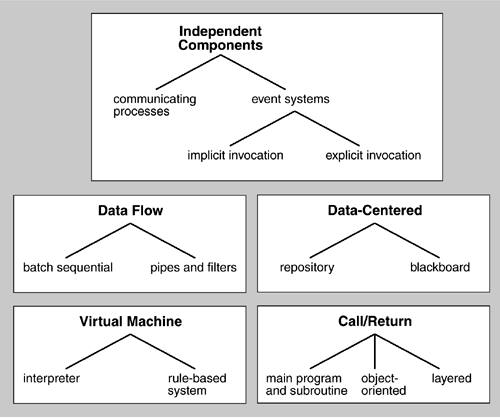

| [ Team LiB ] |
|
5.9 Architectural Patterns and StylesAn architectural pattern in software, also known as an architectural style, is analogous to an architectural style in buildings, such as Gothic or Greek Revival or Queen Anne. It consists of a few key features and rules for combining them so that architectural integrity is preserved. An architectural pattern is determined by:
Mary Shaw and David Garlan's influential work attempted to catalog a set of architectural patterns that they called architectural styles or idioms. This has been evolved by the software engineering community into what is now more commonly known as architectural patterns, analogous to design patterns and code patterns. The motivation of [Shaw 96] for embarking on this project was the observation that high-level abstractions for complex systems exist but we do not study or catalog them, as is common in other engineering disciplines. These patterns occur not only regularly in system designs but in ways that sometimes prevent us from recognizing them, because in different disciplines the same architectural pattern may be called different things. In response, a number of recurring architectural patterns, their properties, and their benefits have been cataloged. One such catalog is illustrated in Figure 5.14. Figure 5.14. A small catalog of architectural patterns, organized by is-a relations In this figure patterns are categorized into related groups in an inheritance hierarchy. For example, an event system is a substyle of independent elements. Event systems themselves have two subpatterns: implicit invocation and explicit invocation. What is the relationship between architectural patterns and tactics? As shown earlier, we view a tactic as a foundational "building block" of design, from which architectural patterns and strategies are created. |
| [ Team LiB ] |
|